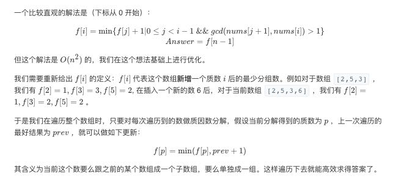

LCP 14. 切分数组
https://leetcode-cn.com/problems/qie-fen-shu-zu/
我觉得这题有两点值得学习：
- 如何做因数分解
- 从另外一种角度考虑状态方程
这题我看了一下ACRush的解法，比官方的解法要稍微更简单点。他的解法当中并没有更新x所有的因数的状态， 而只是更新x所有素数因数的状态，我的代码里面也使用了这个方法。
做因数分解我们肯定需要计算质数表，常用计算质数表的方法是使用筛法。这里改进一下筛法，我们在 数组上面并不记录true/false表示素数与否，而是记录这个数的最小因数。然后在因数分解时，先不断地 除最小因数，然后拿结果去看是否还有更大的因数。看下面代码就能理解了。
N = 100000
factor = [0] * (N + 1)
for i in range(2, N + 1):
if factor[i] != 0: continue
for j in range(1, N // i + 1):
factor[i * j] = i
def factorize(x):
ans = []
while factor[x] != 0:
f = factor[x]
c = 0
while x % f == 0:
x = x // f
c += 1
ans.append((f, c))
return ans
def validate(x, fcs):
ans = 1
for f, c in fcs:
ans = pow(f, c) * ans
return ans == x
关于状态方程可以看 官方解答. 为了方便我粘贴过来

我们不关心当前位置的状态，而是更新当前位置这个数的状态，这个思路有点奇特。
import java.util.*;
class Solution {
public int splitArray(int[] nums) {
int M = 1000000;
int factors[] = new int[M + 1];
for (int i = 2; i <= M; i++) {
if (factors[i] != 0)
continue;
for (int j = i; j <= M; j += i) {
factors[j] = i;
}
}
final int inf = 1 << 30;
int dp[] = new int[M + 1];
Arrays.fill(dp, inf);
int ans = 0;
for (int x : nums) {
int res = ans + 1;
while (x > 1) {
int f = factors[x];
dp[f] = Math.min(dp[f], ans);
res = Math.min(dp[f] + 1, res);
while ((x % f) == 0) {
x = x / f;
}
}
ans = res;
}
return ans;
}
}